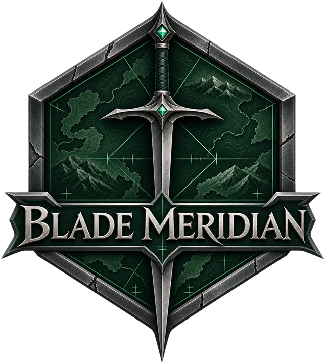
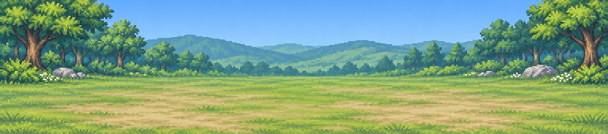

Exploración real
El mapa usa tu ubicación para poblar el mundo de encuentros, minerales y zonas por descubrir.

Un RPG social de exploración
Explora tu mundo. Forja tu leyenda.
Sal a la calle, descubre criaturas y territorios cerca de ti y conviértete en el héroe de tu propia historia. Combates por turnos, equipo que forjar y una comunidad con la que compartir cada victoria.
ANDROID · RPG EN DESARROLLO
El proyecto
Blade Meridian es un juego para Android creado por Honeki. Combina la exploración de un mundo real con la profundidad de un JRPG: tu ubicación determina qué criaturas aparecen, qué recursos puedes recolectar y qué territorios puedes reclamar.
Empiezas como Aventurero. No hay prisa ni pagos: progresas jugando.
Características
El mapa usa tu ubicación para poblar el mundo de encuentros, minerales y zonas por descubrir.
Forma tu equipo, elige habilidades y domina la matriz de elementos en cada batalla.
Sube de nivel, desbloquea clases, forgea equipo y reparte cuatro ranuras de habilidad por objeto.
Únete a partys y clanes, comparte encuentros y disputa el control de los territorios.
Novedades
Selección de mejoras hasta el 22 de noviembre de 2026. Esta página funciona sin conectar con el servidor.

Descargas
Esta página promocional está disponible en GitHub Pages. La descarga del APK depende del servidor oficial y puede no estar disponible si está apagado.
Abrir descargas oficiales ↗El enlace lleva al servidor del juego. Si está desconectado, la descarga no estará disponible.
Al instalar desde fuera de Play Store, Android pedirá confirmar el origen y los permisos. El APK está firmado con el certificado del proyecto.
Comunidad
Novedades, avances y anuncios de Blade Meridian en @HonekiBM.